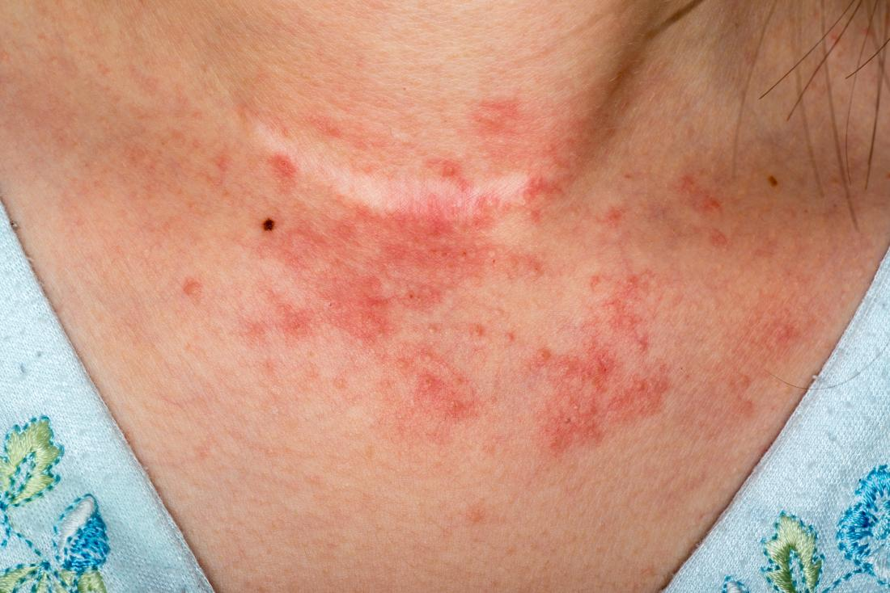

Eccema (Dermatitis atópica)
El eccema, también conocido como dermatitis atópica, es un trastorno que provoca enrojecimiento de la piel y picazón. Es frecuente en niños, pero puede manifestarse a cualquier edad. Es una enfermedad duradera (crónica) y suele exacerbarse periódicamente.

Causas
La piel sana ayuda a retener la humedad y protege de las bacterias, los irritantes y los alérgenos. El eccema está relacionado con una variación genética que afecta la capacidad de la piel de proporcionar esta protección. Los factores ambientales y el estrés pueden desencadenar brotes.
Síntomas
- Piel seca.
- Picazón, que puede ser grave, especialmente durante la noche.
- Manchas de color rojo a marrón grisáceo en la piel.
- Pequeños bultos que pueden supurar líquido y formar costras si se rascan.
- Piel engrosada, agrietada y escamosa.
Pruebas y exámenes
No se requiere ninguna prueba de laboratorio para identificar el eccema. Probablemente, el médico hará un diagnóstico al examinarle la piel y revisar sus antecedentes médicos. Se pueden realizar pruebas de parche para descartar otras enfermedades cutáneas o alergias.
Tratamiento
El tratamiento se centra en curar la piel afectada y prevenir los brotes de los síntomas. Implica rutinas diarias de cuidado de la piel, como humectarla al menos dos veces al día, y el uso de cremas o ungüentos con corticosteroides recetados para controlar la picazón y reparar la piel.
Expectativas (pronóstico)
El eccema no tiene cura, pero la mayoría de los pacientes pueden controlar su enfermedad con tratamiento médico y evitando los factores desencadenantes. En muchos niños, la enfermedad mejora o desaparece a medida que crecen.